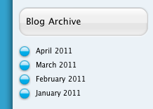

Collection Archive
A Collection Archive object generates month-by-month archives of every page in a collection. They are mostly useful for managing larger blogs.

Settings
Collection Archive objects are very simple to configure. Just drag the target icon in the Object Inspector to a collection in the Site Outline. When you first create an archive object, it will automatically be connected to an appropriate collection if possible.
You can also check the "Show at most:" box, and that will set the number of items that will be shown in the collection.